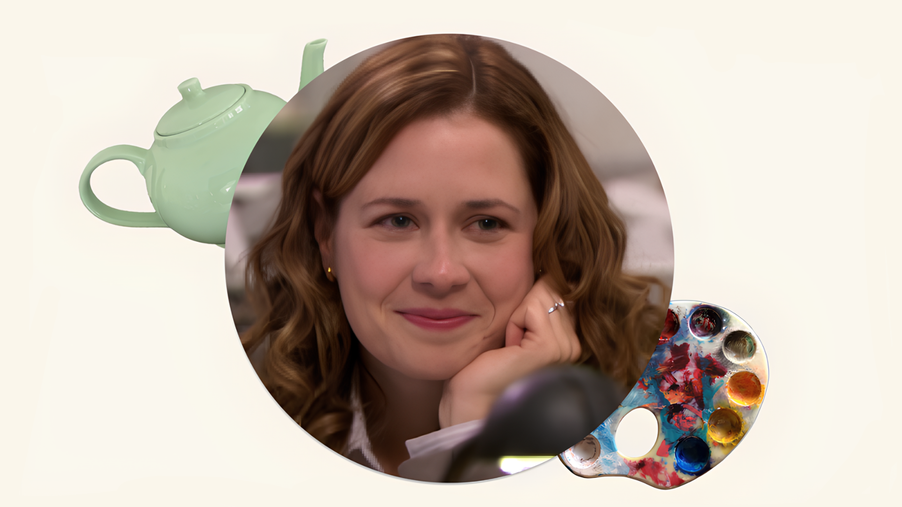

Você seria:
Você é a pessoa que mantém as engrenagens lubrificadas através da empatia e da organização silenciosa. Prefere apoiar a brilhar, mas possui uma força interior resiliente.

Pam Beesly é a recepcionista e o suporte emocional da Dunder Mifflin. Gentil e artística, ela evolui da timidez para a autoconfiança, equilibrando a paciência com Michael e a cumplicidade com Jim. Pam representa a sensibilidade e a coragem de encontrar a própria voz em um ambiente comum.